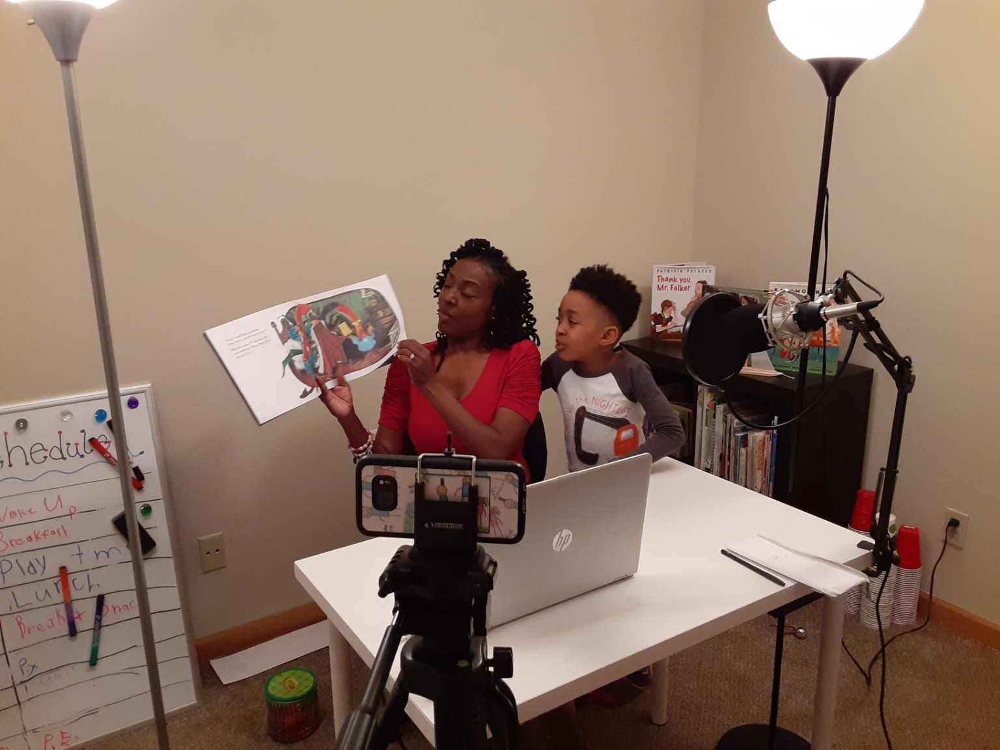

When the Diagnosis Changes the Whole Family
An honest, hopeful keynote about navigating fear, building community and helping a child live beyond a diagnosis.
- Caregiver confidence
- Family resilience
- Joy as advocacy
Speaker · Educator · Author · Advocate
Tiffany C. Mosby helps families, educators and communities transform life’s challenges into courage, connection and purposeful action.
Learning and compassion can grow in any circumstance.
The story behind the voice

Before she was an author and entrepreneur, Tiffany was an educator who believed every child deserved to feel capable, represented and understood.
Born in Blue Island, Illinois, and raised in Robbins and Harvey, Tiffany graduated early from Rich Central High School. She earned her bachelor’s degree from St. John’s University, a Master of Education from Chicago State University and an Education Specialist degree from National Louis University.
At Chicago State, she was a McNair Scholar and was selected to speak at graduation. Across more than 16 years in education—and five years homeschooling her son, Myles—she learned to meet children where they are and help families become confident partners in their learning.
When Myles was diagnosed with Type 1 diabetes, Tiffany turned the family’s experience into advocacy, children’s books and practical resources. Her work today sits at the intersection of education, representation, resilience and joy.
Speaking experiences
Tiffany brings the credibility of an educator, the honesty of a parent and the imagination of a creator to every audience.
An honest, hopeful keynote about navigating fear, building community and helping a child live beyond a diagnosis.
A practical parent-and-educator conversation about Section 504 plans, meaningful accommodations and productive school partnerships.
How representation, affirming language and intentional learning experiences help children build courage and identity.
A creator’s journey from identifying unmet needs to publishing books, building brands and serving families with purpose.
Section 504 presentations provide educational information and lived-experience guidance, not legal advice.
“The goal is not simply to help families endure hard things. It is to help them discover their voice, their community and their capacity for joy.
Tiffany C. Mosby
Books & resources
Tiffany creates alphabet-based coloring books and family resources that help young learners explore identity, careers, empathy, bravery and life with diabetes.
Visit Tiffany’s Amazon StorePurpose in practice
Watch & listen
Tiffany’s video work documents the everyday realities of Type 1 diabetes while showing children and caregivers that they are never alone.
Visit Tiffany’s YouTube ChannelBring Tiffany to your audience
Tiffany is available for keynotes, workshops, panels and family-centered events for schools, diabetes organizations, healthcare communities and parent groups.
Include your event date, audience, location and preferred topic. A direct booking email will be added shortly.